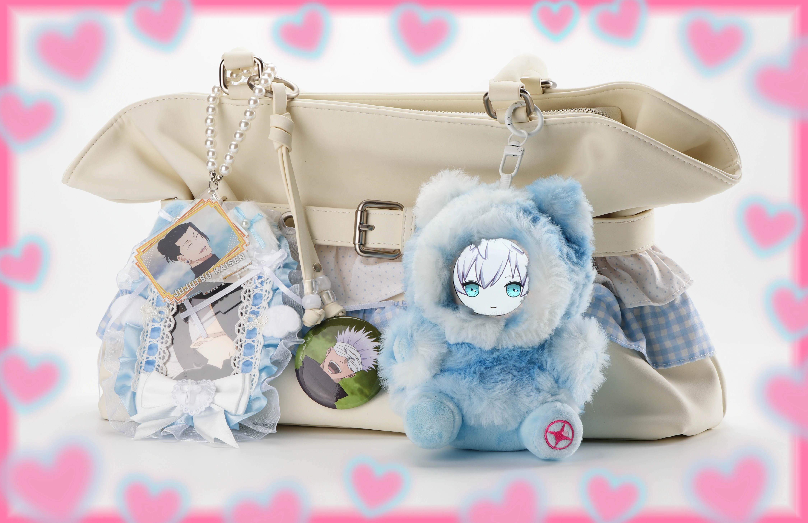
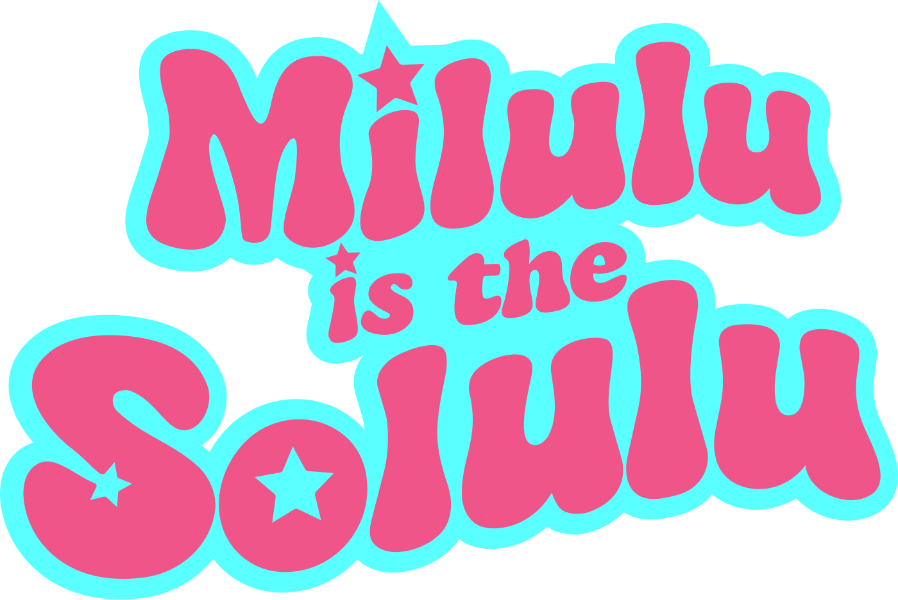

Bring your favorite character into your real life -- wake you up, remind you to drink water, and listen when no one else is around.


Bring your favorite character into your real life -- wake you up, remind you to drink water, and listen when no one else is around.
Your character wakes you up and asks how you slept. A tsundere screams at you for hitting snooze. A cool, mysterious type just sighs and waits. Every morning plays out differently because it's a real conversation between you two.